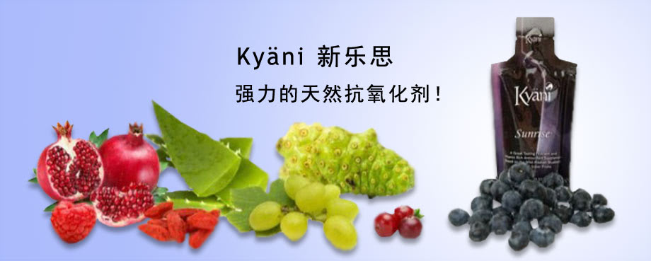
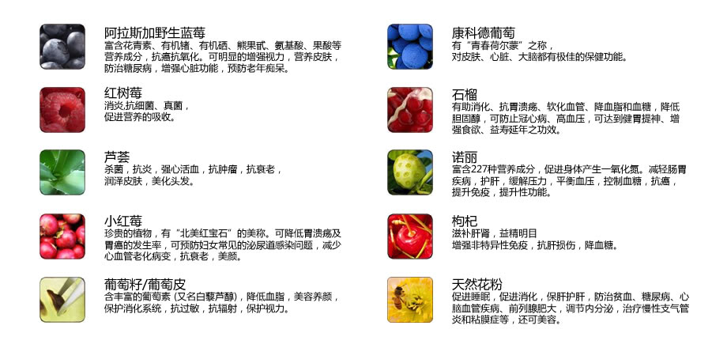
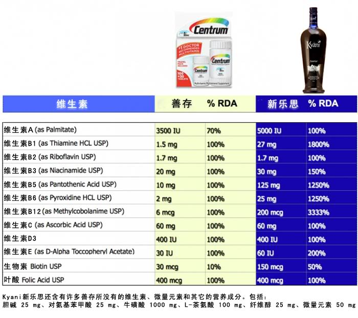
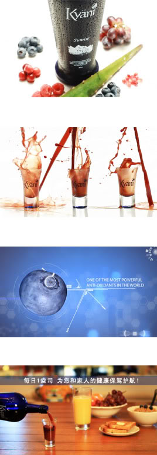

新乐思——来自阿拉斯加的野生蓝莓
新乐思中最主要的成分蓝莓是杜鹃花科越橘属野生落叶灌木，原产地在北美，蓝色的食物在地球上是少有的，而蓝莓就是一种。其营养成分非常丰富，被联合国粮农组织列为人类五大健康食品之一，誉为“ 黄金浆果 ”。美国农业部（USDA）委托塔夫斯大学测试了40 种具有抗氧化能力的蔬菜和水果，蓝莓抗氧化能力排在首位；据美国、日本、欧洲科学家研究，蓝莓微量元素的含量普遍高于其他水果，富含花青素，花青素抗自由基的能力是维生素C的20倍，维生素E的 50倍，其体内活性更是其他抗氧化剂无法比拟的。而阿拉斯加野生蓝莓更比普通蓝莓抗氧化能力高出10倍。多食蓝莓可明显地增强视力，消除眼睛疲劳，营养皮肤，延缓脑神经衰老，对由糖尿病引起的毛细血管病有治疗作用，增强心脏功能，预防老年痴呆，有助预防结肠癌的发生。而花青素保健作用的发现，被誉为20世纪营养学最重要的发现之一。蓝莓的营养价值为人们所知后迅速风靡世界，营养师、世界各大媒体及医疗专业人员推荐它的神奇功效。美国最有影响的健康杂志《 Prevention 》称其为“神奇果”，美国时代杂志将蓝莓评选为“十大最佳营养食品之一”。
阿拉斯加
阿拉斯加野生蓝莓是最顶级的蓝莓，也是最有营养价值的矮丛蓝莓。研究表明：阿拉斯加野生蓝莓具有药用价值，其抗氧化能力是普通蓝莓的10倍！这由于阿拉斯加野生蓝莓处于极地环境，生活在北极圈以内，气候十分恶劣。在白令地区，每年5月10日太阳升起后在随后的3个月里将不再落下，称为极昼；而每年11月18日日落之后当地居民将有2个多月看不见太阳，称为极夜。阿拉斯加野生蓝莓能在极昼环境下保护自己免受太阳的侵害，说明它的抗氧化能力之强；在极夜的冬天还能抵御严寒，在零下四五十摄氏度的低温仍能生存。阿拉斯加野生蓝莓的根深深扎在地下的冻层，冻层终年温度在零下十摄氏度左右，由于土层矿物质丰富，所以阿拉斯加野生蓝莓含有更丰富的抗氧化物。
Kyani新乐思(Kyani Sunrise)的主要成分就是阿拉斯加的野生蓝莓，公司对其原料的垄断保证了野生蓝莓的优质纯正，再加以高科技的配方，造就了新乐思极强的抗氧化能力。Sejuice是市面上很优秀的补充饮品，OARC(抗氧化能力值)也不过7500，而一瓶新乐思的OARC值高达34996！这足可以保护您的身体细胞免受自由基的损害，可以预防很多疾病的发生，同时修复受损细胞，延缓衰老。
您享受的不仅仅是野生蓝莓
新乐思不仅含有美味的阿拉斯加野生蓝莓， 还包括9种天然成分：康科德葡萄、红树莓、石榴、芦荟、诺丽果、小红莓、枸杞、葡萄籽、葡萄皮、天然花粉。这些天然成分共同组成了五色五味的完全食物，可以随时随量食用，同时由于是液体方式摄取，能够通过口腔黏膜迅速高效的吸收，新乐思的生物利用率高达97%-100%！而片剂制品的利用率最高为19%。

Kyani新乐思与善存的营养对比

首先解释下“%RDA”的概念，它是“推荐每日摄取百分比”（recommended dietary allowance），以2000卡路里的饮食为计算标准。以维生素A为例，人们每日饮食平均摄取2000卡路里，这些食物当中含有的维生素A量约为5000IU（IU，国际单位，用于衡量生物 效能，和“毫克”的作用类似），而食用一次新乐思摄取的维生素量也为5000IU，所以表中的RDA值为100%，可以理解为假设什么也不吃，新乐思也能满足人体对维生素A的需求。尤其对想减肥的人来说，如果一天摄取的热量不足2000卡路里，那么就需要通过新乐思补充维生素A。每天早晨只要一盎司新乐思（大约28克），就能提供给您每日需要的100%维生素和矿物质！
最重要的是，新乐思的维生素都是天然食物精华浓缩液，是完全食物，不是提取物。就像前章提到的那样，摄入新乐思就如同食用了这么多顶级的水果，不需要消耗体内的元素来吸收其营养，更不会有副作用。
使用阿拉斯加蓝莓超级混合补充食品的原因

有效的减压、美容
新乐思中各种莓果食物都有利于减压，预防和缓解抑郁症、更年期的烦躁情绪等问题。同时，蓝莓是有助于胶质的形成和稳固，可以防止皮肤的老化，有很好的美容养颜功效。
维护心脏健康、防止血栓形成
新乐思能够清除导致血管壁硬化的自由基，增强毛细血管的柔韧性，促进血管的伸缩性，防止血管破裂，改善血液循环，还可以增强关节及软组织的功能。蓝莓中含有丰富的类黄酮物质，具有抑制血小板凝固的作用，可以预防血栓的形成，减少动脉硬化的发生。
滋养免疫系统、舒缓炎症
花青素能激活免疫系统，使免疫球蛋白不受自由基的侵害，激活巨噬细胞， 增强人体的免疫力。
解除眼睛疲劳、改善视力
新乐思可以调节近视，消除眼疲劳。对视疲劳、视力模糊、眼干涩，怕光以及中年视力减退、老花眼等具有养护作用；对自由基过高而导致的眼睛晶状体的蛋白质氧化、玻璃体浑浊、白内障有很好的调节作用。
抗衰老、改善记忆力
新乐思对因衰老而引起的瞬间失忆症有明显的改善和预防作用。滋养和激活脑细胞，改善神经传导减缓、认识能力退化，改善记忆力，对小宝宝的智力发育也非常有好处。
DNA防御、抗癌
新乐思能够清除自由基，保护细胞的DNA，保护健康细胞免于被癌细胞侵蚀，有很好的防癌抗癌效果。
控制血糖、预防糖尿病及并发症
新乐思有抑制血糖升高的作用，对需要服用降糖药和注射胰岛素治疗的糖尿病患者，不仅能调节血糖值，减少胰岛素注射量，还能预防由血管病变引起的失明、足部溃疡等并发症。由于糖尿病患者体内的自由基非常高，会增加患癌症、心血管疾病、中风等疾病的危险，补充新乐思能够降低体内的自由基，对糖尿病的症状有显著的疗效，对糖尿病引发的慢性疾病有很好的预防作用。
不含杂质
新乐思中不含防腐成分，不含杂质，对人体无负担，无副作用。
新乐思是一款很特别的产品。它有很强的抗氧化能力，可以抵御自由基，还有多种维他命来保持身体的全面健康状态，每天食用新乐思将深远地改变您的生活。
——伯克博士